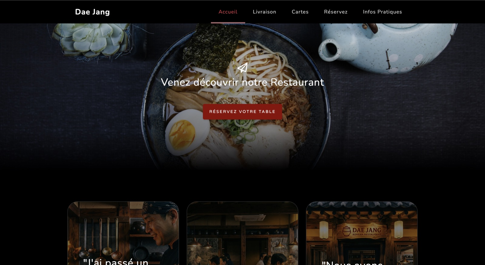

Dae Jang
Site en front pour un restaurant Coréen
Contexte & Objectif
DaeJang est un projet réalisé dans le cadre de mon cours de développement web, consistant à créer le site vitrine d'un restaurant fictif. L'objectif était d'exploiter le framework Bootstrap pour développer une interface moderne et entièrement responsive, offrant une mise en valeur du menu et une expérience utilisateur fluide sur tous les écrans.
Besoin technique : Créer un site en utilisant exclusivement Bootstrap.
Stack Technique
Démo & Déploiement

Challenges Techniques Rencontrés
-
Le Responsive Design (La grille Bootstrap)
Défi : Adapter l'affichage de la carte du restaurant pour que le menu soit bien lisible sur ordinateur, mais aussi sur petit écran (téléphone) sans que tout se chevauche.
Solution : J'ai dû me documenter et faire plusieurs tests avec le système de grille de Bootstrap (les classes col-sm, col-md, etc.) pour comprendre comment les colonnes se réorganisent selon la taille de l'écran. -
Personnalisation de l'identité visuelle
Défi : Éviter que le site ressemble à un modèle Bootstrap "standard" (par défaut), notamment pour la barre de navigation (Navbar) et les couleurs des boutons.
Solution : J'ai créé un fichier CSS personnel pour venir "écraser" (surcharger) certaines règles de base de Bootstrap et appliquer la charte graphique de DaeJang.
Rétrospective Personnelle
Rétrospective Personnelle
Ce que j'ai appris :
- Intégration d'un Framework UI : Apprentissage de la logique Bootstrap pour accélérer le développement tout en gardant un code propre.
- Maîtrise du Responsive Design : Utilisation du système de grille (Grid System) pour garantir une expérience parfaite du smartphone à l'écran large.
- Personnalisation CSS : Savoir surcharger (override) les composants par défaut de Bootstrap pour créer une identité visuelle unique.
- Logique Front-End : Manipulation du DOM avec JavaScript pour rendre l'interface interactive.